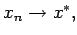
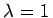
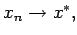
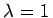
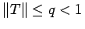
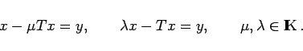

Inhalt Index DeskTop Bronstein

 Funktionalanalysis Stetige lineare Operatoren und Funktionale Lineare stetige Operatoren in Banach-Räumen
Funktionalanalysis Stetige lineare Operatoren und Funktionale Lineare stetige Operatoren in Banach-Räumen


Die Methode der sukzessiven Approximation eignet sich zur Lösung einer Gleichung der Form
zu erzeugen, die in  zur Lösung x* von (12.147) konvergiert. Die Konvergenz der Methode, also  basiert auf der Konvergenz der Reihe (12.142) mit .
zur Lösung x* von (12.147) konvergiert. Die Konvergenz der Methode, also  basiert auf der Konvergenz der Reihe (12.142) mit .
Sei , dann gelten die folgenden Aussagen:
Analog (s. Lineare Integralglweichungen und Lit. 12.9) behandelt man Gleichungen der Typen
|  | (12.150) |